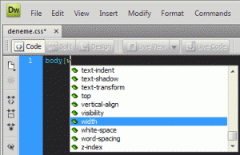

Css ile kod yazarken gereksiz bazı kodlar kod yazma hızımı kesiyordu, bazen hızla kod yazarken arada başka kodları yazdığımda olmuyor değildi. Bu sorunumu friendfeed'de paylaştım ve sağolsun arkadaşlar bu konuda bana yardımcı oldu. Şenol'un yardımları ile sorunun çözümünü bulduk.
Bu ipucunu burada paylaşma ihtiyacı duydum.
Çözüm şöyle;
C:Program FilesAdobeAdobe Dreamweaver CS4configurationCodeHints (Bu yol tam uymaya bilir farklı işletim sistemlerinde farklı yerlerde olabilir, ama bu yol size bir fikir verecektir)Klasörü içindeki CodeHints.xml xml dosyasında istemediğimiz etiketleri kaldırıyoruz.
Örneğin benim ilk kaldırdığım kod widows kodu. Bu kod için xml dosyasındaki aşağıdaki kodu silmek gerekiyor.
<menuitem label="widows" value="widows:"icon="shared/mm/images/hintMisc.gif" />
Bunun dışında xml dokümanındaki kullanmadığım ve bir daha kullanmayacağım css kodlarını sildim. Silerken dikkat edin bu dosya içinde sadece css kodları yok. Tüm otomatik tamamlama kodları bu xml dokümanı içinde
- azimuth
- caption-side
- counter-increment
- counter-reset
- cue
- cue-after
- cue-before
- direction
- elevation
- marker-offset
- marks
- orphans
- pause
- pause-after
- pause-before
- pitch
- pitch-range
- play-during
- richness
- speak
- speak-header
- speak-numeral
- speak-punctuation
- speech-rate
- stress
- unicode-bidi
- voice-family
- volume
Bunları sildim ve width ve white-space yerini değiştirdim.
Benim sonuç xml dosyamı burada paylaşıyorum. Eskisinin yedeğini almayı unutmayın.
CodeHints.xml dosyasını indirmek için tıklayınız.
Şenol'un hazırladığı
[CodeHints.xml dosyasını indirmek için tıklayınız. (Şenol'un geliştridiği)][]
Yazının sonunda Şenol'a tekrar teşekkürlerimi sunarım.
Yorumlar !